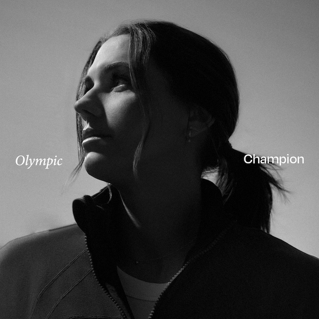

Alex Morgan over The Athletes Code
“Mijn eerste gedachte is hoe zeer The Athletes Code nodig was toen ik zwanger was.
Door de constante steun voel je je een beetje onoverwinnelijker.”

Powerade begrijpt dat het bij een atleet niet alleen om fysieke kracht gaat; het gaat ook om mentale sterkte. We zijn hier om atleten te beschermen op hun sportieve reis, hen helpen hun mentale welzijn te prioriteren zodat ze sterker terugkeren. We zijn gecommitteerd aan de volgende principes:
Atleten kunnen hun partnerverplichtingen met Powerade pauzeren om zich te concentreren op hun mentale welzijn. Dit geeft hen de tijd en ruimte die ze nodig hebben om te herstellen zodat ze sterker terugkeren naar hun sport.
We ondersteunen atleten volledig. Dat betekent dat we hen beschermen als ze moeten pauzeren om hun mentale gezondheid te prioriteren, zonder de dreiging hun sponsoring te verliezen.
We behandelen alles wat over de mentale gezondheid van een sporter wordt gedeeld met de grootste zorgvuldigheid en respect en houden dit vertrouwelijk.
Met De Athletes Code is het ons doel om een nieuwe maatstaf te creëren in de sportindustrie en -cultuur waar het nemen van tijd om te herstellen wordt gezien als een teken van kracht, niet van zwakte.
Deze contractuele voorziening zal elke Powerade-sporter beschermen als ze moeten pauzeren, zodat ze zich kunnen concentreren op hun mentale welzijn zonder het risico hun sponsoring te verliezen.
Download“Mijn eerste gedachte is hoe zeer The Athletes Code nodig was toen ik zwanger was.
Door de constante steun voel je je een beetje onoverwinnelijker.”
“Het is een eer om aan deel te nemen en om atleten te laten weten dat ze vertrouwen kunnen hebben in hun sponsors, zodat zij weten dat ze blijven bestaan zelfs als ze even pauze moeten nemen.”
Tatjana Smith“Dit is iets dat de cultuur van sporten kan transformeren. Dat een atleet weet dat je beschermd bent, geeft je een rust om sterker en sneller terug te komen.”
Douglas Matera“The Athletes Code is een geweldig iets, omdat het de spelers beschermt en het niet alleen focust op speelveld-zaken, maar ook buiten speelveld-zaken.”
Linda MotlhaloHier zijn de atleten die al deelnemen aan The Athletes Code
Baanwielrenster
Frankrijk
Voetbalster
Nieuw-Zeeland
Para-wielrenner
Frankrijk
Tafeltennisspeler
Duitsland
Surfer
Australië
Wielrenner
Nederland
Voetbalster
Verenigde Staten
Zwemster
Zuid-Afrika
Paralympisch Zwemmer
Brazilië
Voetbalster
Zuid-Afrika
Voetbalster
Zuid-Korea
Paralympisch Zwemmer
Chili
Roeister
Nieuw-Zeeland
Doelverdediger
Australië
Zwemster
Zuid-Afrika
Als je een atleet bent, deel The Athletes Code met je partners en sponsors.
Als je een merk bent, sluit je aan. Samen kunnen we sportponsoring voor altijd veranderen.
Meld je nu aan voor exclusieve toegang!